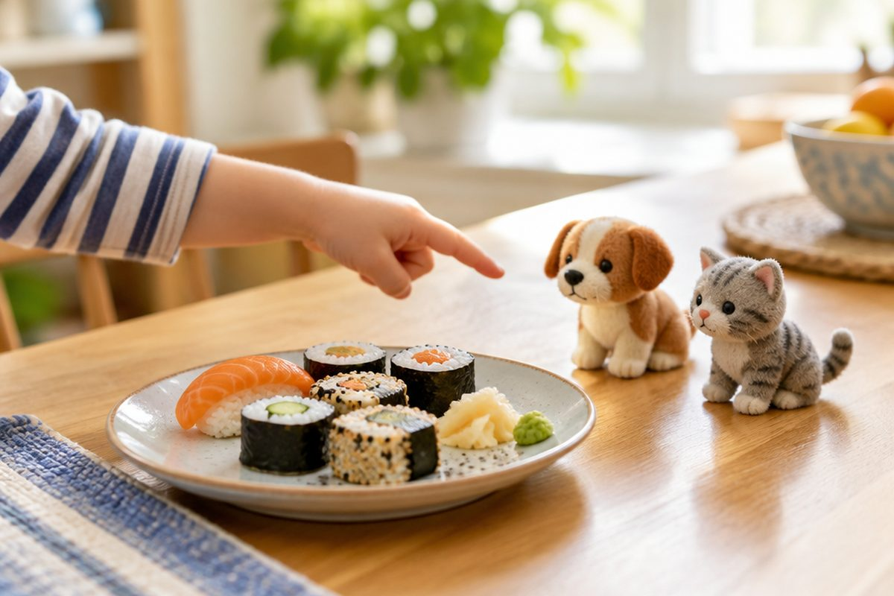

すし, ねこ, いぬ를 히라가나로 읽어 볼까?

초밥을 일본어로 すし(스시)라고 해요. 오늘 배울 さ행·た행·な행 글자를 알면 すし, ねこ(고양이), いぬ(개)도 혼자 읽을 수 있어요!
s 소리 줄, さ행
さ행은 さ(sa, 사), し(shi, 시), す(su, 스), せ(se, 세), そ(so, 소)예요.
し는 로마자로 si가 아니라 shi라고 써요. 소리는 우리말 '시'와 거의 같아요.
す는 '수'보다는 입술을 덜 내밀어 '스'에 가깝게 소리 내요.
すし(sushi, 스시) 초밥 / いす(isu, 이스) 의자 / うし(ushi, 우시) 소
t 소리 줄, た행 — ち와 つ를 조심해요
た행은 た(ta, 타), ち(chi, 치), つ(tsu, 츠), て(te, 테), と(to, 토)예요.
ち는 ti가 아니라 chi로 '치' 소리예요. つ는 tsu로, 혀끝을 윗니 뒤에 댔다가 떼며 '츠' 하고 소리 내요. 우리말에 딱 맞는 소리가 없어서 연습이 필요해요.
さ와 ち는 거울에 비친 것처럼 닮았어요. さ의 아랫부분은 영어 c처럼 왼쪽으로 둥글고, ち의 아랫부분은 숫자 5의 아래처럼 오른쪽으로 둥글어요.
たこ(tako, 타코) 문어 / くつ(kutsu, 쿠츠) 신발 / なつ(natsu, 나츠) 여름
n 소리 줄, な행
な행은 な(na, 나), に(ni, 니), ぬ(nu, 누), ね(ne, 네), の(no, 노)예요. 우리말과 소리가 거의 같아서 쉬워요.
ぬ는 끝에 작은 고리가 있어요. ね도 끝에 고리가 있지만 왼쪽에 세로 막대가 하나 있어요.
の는 한 번에 빙글 돌려 쓰는 글자예요. '~의'라는 뜻으로 아주 자주 나와요.
いぬ(inu, 이누) 개 / ねこ(neko, 네코) 고양이 / なす(nasu, 나스) 가지
배운 글자로 낱말 읽기
이제 あ행부터 な행까지 25글자를 배웠어요. 읽을 수 있는 낱말이 훨씬 많아졌어요.
さかな는 さ(사)+か(카)+な(나)로 '사카나', 뜻은 물고기예요. つくえ는 '츠쿠에', 뜻은 책상이에요.
さかな(sakana, 사카나) 물고기 / つくえ(tsukue, 츠쿠에) 책상 / かさ(kasa, 카사) 우산
핵심 낱말
- さ행
- さ, し, す, せ, そ. s 소리 줄인데 し만 shi(시)예요.
- た행
- た, ち, つ, て, と. ち는 chi(치), つ는 tsu(츠)예요.
- な행
- な, に, ぬ, ね, の. 우리말 '나니누네노'와 소리가 비슷해요.
- 로마자
- 일본어 소리를 알파벳으로 적은 것. 예: すし → sushi.
꼭 알아야 할 표현
| さしすせそ | さ행 다섯 글자 | sa shi su se so (사 시 스 세 소) |
| たちつてと | た행 다섯 글자 | ta chi tsu te to (타 치 츠 테 토) |
| なにぬねの | な행 다섯 글자 | na ni nu ne no (나 니 누 네 노) |
| すし | 초밥 🍣 | sushi (스시) |
| いぬ | 개 🐶 | inu (이누) |
| ねこ | 고양이 🐱 | neko (네코) |
| さかな | 물고기 🐟 | sakana (사카나) |
| たこ | 문어 🐙 | tako (타코) |
| くつ | 신발 👟 | kutsu (쿠츠) |
| なつ | 여름 ☀️ | natsu (나츠) |
| つくえ | 책상 | tsukue (츠쿠에) |
한 줄 정리
- さ행은 さ し す せ そ(사 시 스 세 소), し는 shi예요.
- た행은 た ち つ て と(타 치 츠 테 토), ち는 chi, つ는 tsu예요.
- な행은 な に ぬ ね の(나 니 누 네 노)로 우리말과 소리가 비슷해요.